全场景视频截图参考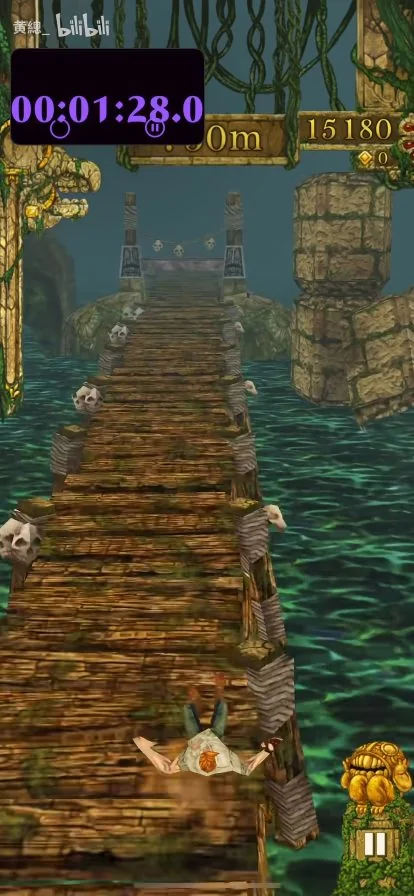
90s · 木桥
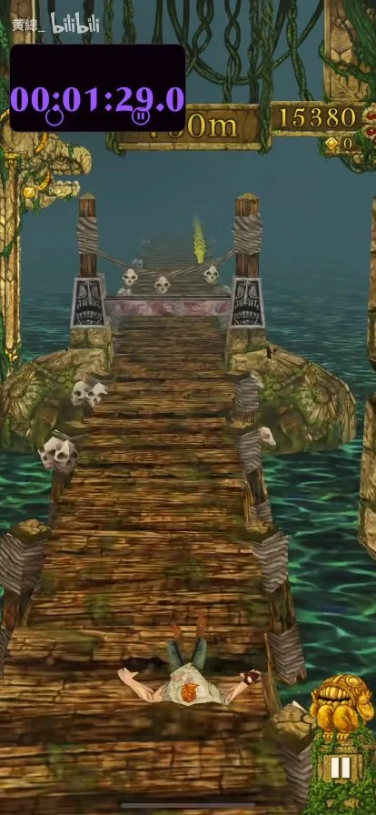
91s · 木桥
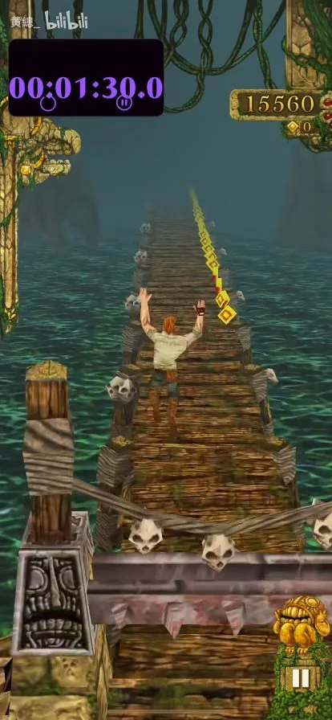
92s · 木桥
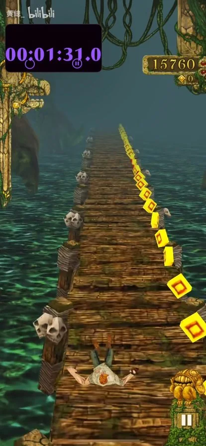
93s · 木桥
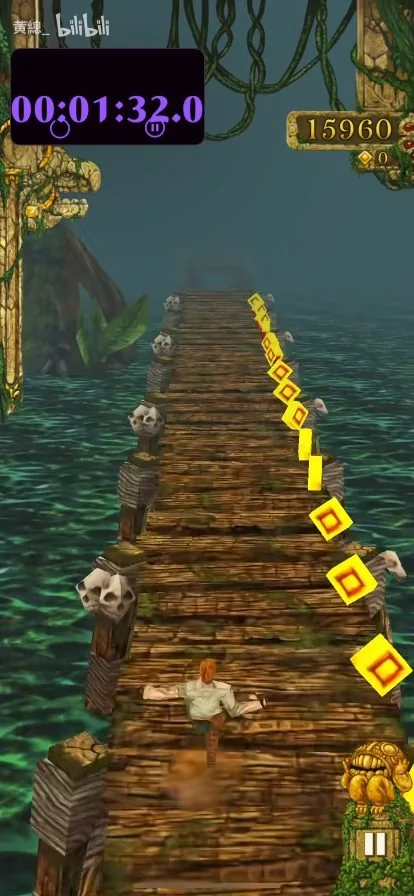
94s · 木桥
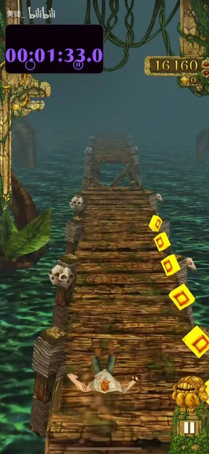
95s · 木桥
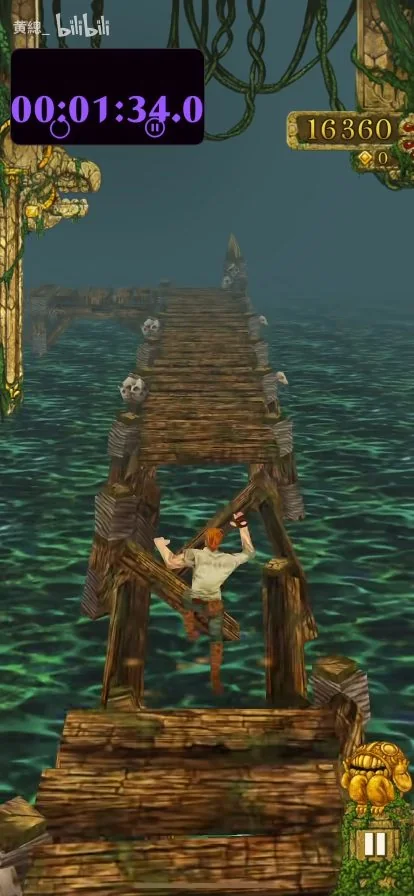
96s · 木桥
 97s · 木桥
97s · 木桥
木桥整幅缺口与跳跃。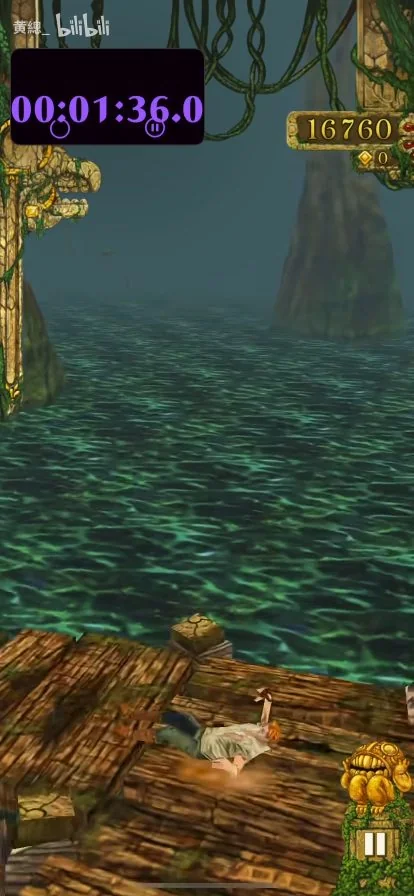
98s · 木桥
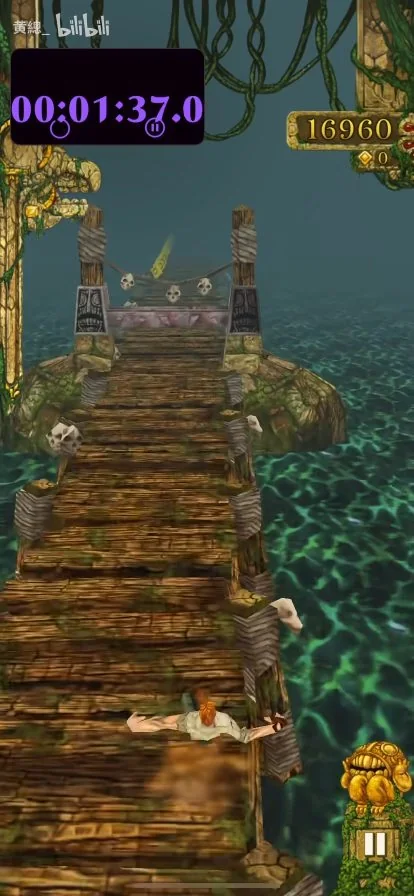
99s · 木桥
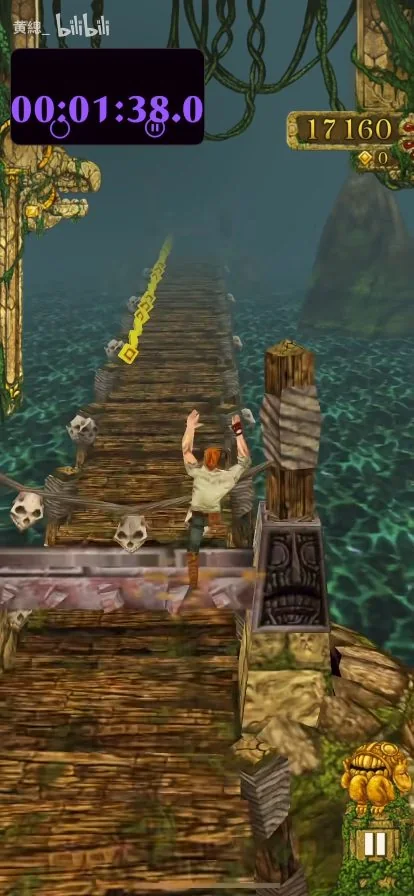
100s · 木桥
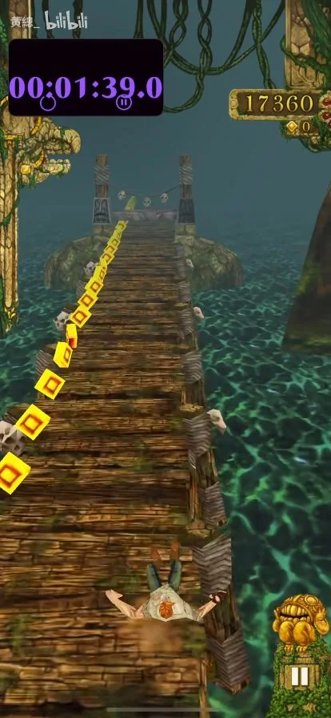
101s · 木桥
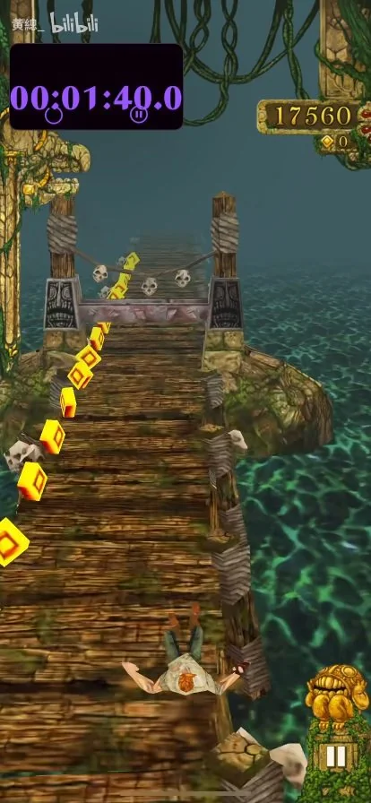
102s · 木桥
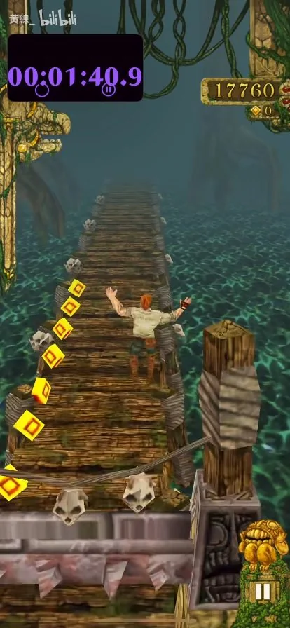
103s · 木桥
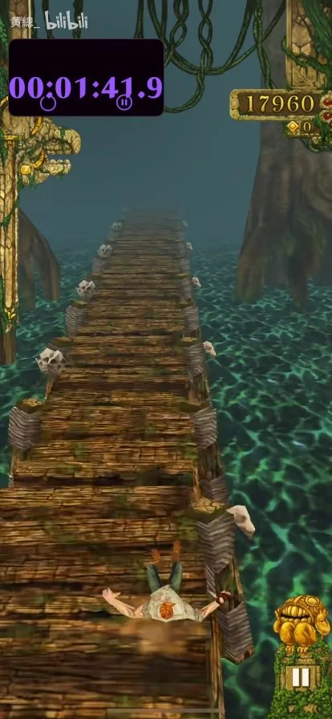
104s · 木桥
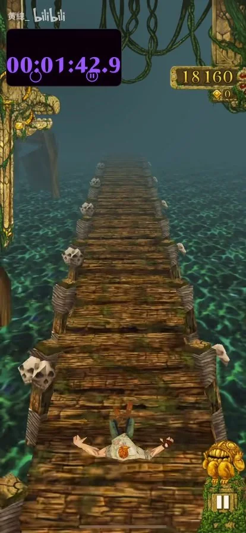
105s · 木桥
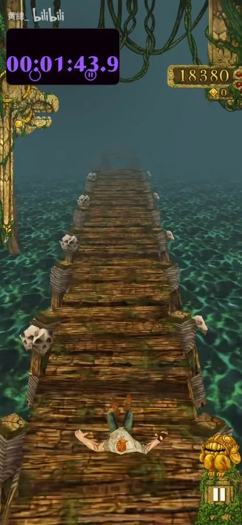
106s · 木桥
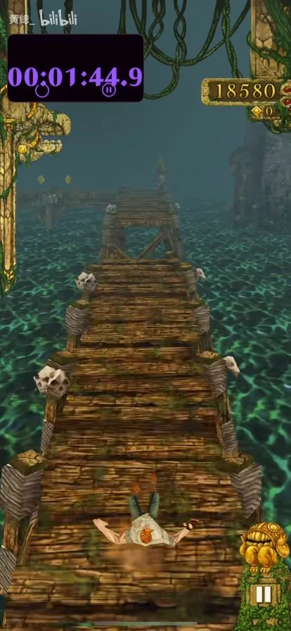
107s · 木桥